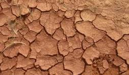
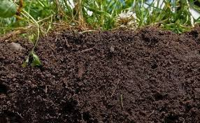
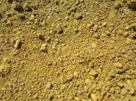
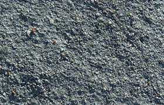
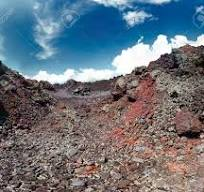
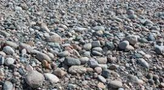
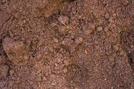

Suelo Arenoso

Gran tamaño de partículas, drena rápido, poca retención de agua y nutrientes.
Suelo Arcilloso

Partículas finas, alta retención de agua, pobre drenaje, rico en nutrientes.
Suelo Limoso

Textura suave, buena retención de agua, fértil pero puede compactarse.
Suelo Franco

Mezcla equilibrada de arena, limo y arcilla; ideal para cultivo.
Suelo Calcáreo

Rico en carbonato de calcio, pH alcalino, pobre en materia orgánica.
Suelo Salino

Alta concentración de sales, baja fertilidad y problemas para la mayoría de cultivos.
Suelo Volcánico

Rico en minerales y nutrientes, excelente fertilidad.
Suelo Pedregoso

Abundancia de piedras, poco apto para agricultura intensiva.
Suelo Humífero
Alto contenido de materia orgánica, muy fértil y esponjoso.
Suelo Arenoso-Franco

Más drenaje que el franco pero menos fértil que el humífero.
"La salud de nuestro planeta comienza en la tierra que cultivamos."